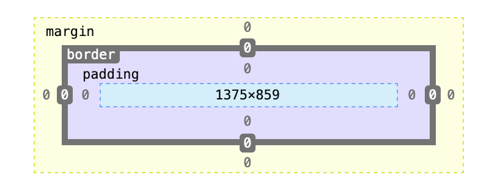

Recall from last week that CSS uses the box model. Every HTML is wrapped in a box with padding, a border, and margin.
One effective way to add white space to a website is to manipulate the padding and margins of an element. These process can involve even distribution of spacing (using one value), or customised differences on all 4 sides (order of values is top, right, bottom, left).
Margin: 20px
Padding: 20px
Another effective way to layout the page and use white is to use the div element. The div element functions as a container that is stylised using CSS classes. For instance, on this page, I use the div element to create different coloured bands to space, organise and present content. If you look at the style sheet for this site, you can see how I created the classes "text1" and "text2," which I then call in the HTML div tags for the alternating band effect.
A navigation bar can be a useful way to enable visitors to navigate a website. It can be created using a stylised unordered list. You can add links for each of the different sites on your page, add links to relevant external sites (such as social media pages, and/or link to sections within a page. These three applications are demonstrated in the HTML for this page. The links above will be useful for developing your Final Project. You can also make a "sticky" navigation bar, which stays at the top of the window as you scroll down a page. This feature is commented out in the ruleset for header on the style sheet for this page.
Flexbox is a technique used to layout content on webpages. It works in one dimension (either as a row or column), unlike grids, which are two dimensional (arrange in rows and columns at the same time). Both flexbox and grids are more advanced CSS techniques that will take time and practice master, but I will briefly touch on flexbox, as this may be useful for laying out content on your site, such as laying out text next to an image.
In order to use flexbox, a flex container class needs to be defined. Every item within the flex container element will be a flex item (no need to define separately).
Here is an example of a flex box with a container and two items. As you can see it is a useful way to place text next to images. Check out the CSS stylesheet and the HTML document for this page to see the code to create this. There are various ways to customise flex boxes; see links above under for different values that can be changed or refer to the MDN documents for Flexbox.
Using everything that you have learned so far in this MD190 module create a small web site (minimum 3 pages; max 5 pages) that tells the story of you. Keep the tone professional and imagine prospective employers will potentially view this, however at the same time you are trying to help them get to know you so that you stand out from the crowd. Your web site should include optimized imagery as well as text content. Make sure that there are no typos and that you use the correct file formats for web.
Creativity, thought/effort in developing content, and technical competence are being graded in this assignment.
To start you should plan your web site by creating a site map. To get inspired you can look up existing similar content online. Keep in mind that developing websites (even mini-websites) take time, including the time required to gather and prepare content. Make sure to give yourself sufficient time to complete the assignment, due Friday 16 December at 5 pm.
An extended brief, including marking criteria and useful code can be found on Moodle in the final project assignment brief. Refer to the Week 10 Tutorial for steps on setting up a root folder and getting started with the project.